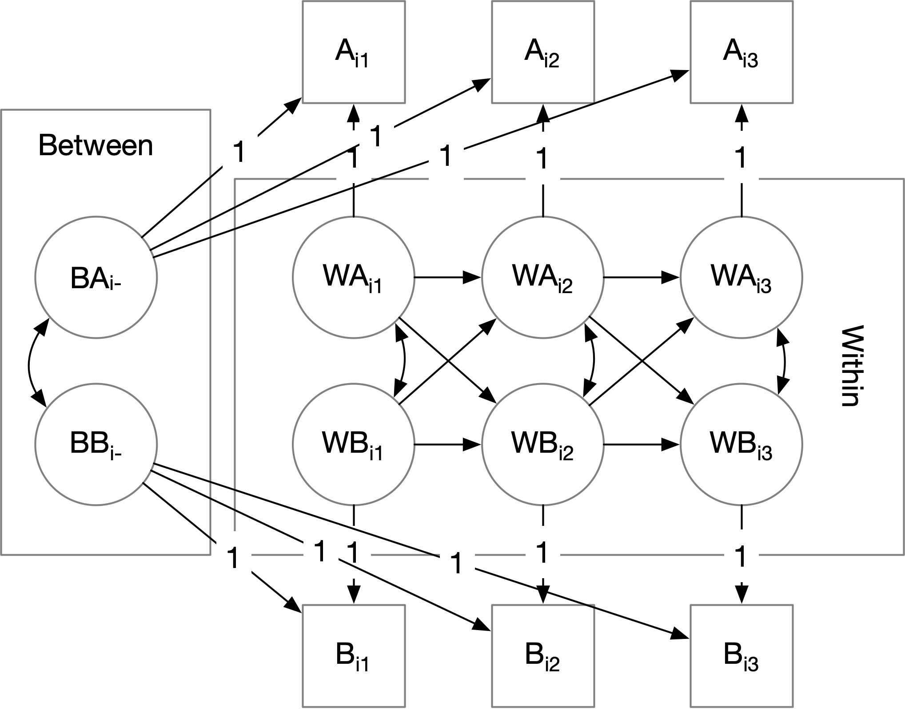

This website is being refreshed. Thanks for your patience while it has less content than usual.
Welcome to my professional website, focusing on Nick as a statistician.
I am an applied statistician with an MS in Biostatistics with, with experience in the applied health and social sciences – until now mostly in academic institutions. I enjoy working in multidisciplinary teams. I've worked in all sorts of fields – everything from mental health epidemiology, autism services research, large-scale opinion survey research, spatiotemporal modelling and geography in public health...
I believe my best work has always been done in collaboration with methodologists from other fields. Although I'm trained as a biostatistician, I've enjoyed working with methodologists that have been industrial/organizational psychologists, geographers, research/evaluation folks in health departments, etc...
I care both about analysis and rigorous research design. I gravitate towards observational/longitudinal research with large and complex samples, and techniques that answer causal questions. Currently, my favorite tools are structural equation models with mixed-effects bells and whistles.
Finally, I believe everybody counts.
I am looking for a job! Email me at nchaiyachakorn@gmail.com if my statistical toolkit's right up your alley
Professional history
2026, summer.
It was a privilege to be an HRTP intern at New York City's Department of Health and Mental Hygiene. (I think it used to stand for Health Research Training Program (?)) I worked with the Bureau of Mental Hygiene's Surveillance team, wrangling data from many meaningful, very large real-life public health datasets — anonymized patient discharges (for those in the know, NYS SPARCS), ED admissions data, referrals to mental health services. I ended up creating an interactive composite indicator dashboard with R and Shiny – with maps, a sensitivity analysis tool, etc... And, I met fantastic people who taught me a great deal about work-life balance... so you can be in there for the long haul.
2024-2026.
I finally decided to get an MS in Biostatistics from Oregon Health and Science University's School of Public Health. What a privilege to finally get a well-rounded statistical training... from causal methods with epidemiologists, to clinical trial design with cancer biostatisticians (alpha-spending! adaptive methods!)
More importantly, I spent two wonderful years interning in an NIH-funded research trainee program for pre-doctoral students, learning how to conceive and plan secondary data analysis on Medicaid claims (for those in the know, CMS' T-MSIS TAF), looking at what might be associated with ED use by autistic adolescents in crisis... and comparing state rates. I learned a great deal about secondary data analysis on large health datasets - operationalizing analytic cohorts, sets of diagnosis and CPT codes...
I had some fun (but sadly unfinished) side-tracks doing geographical analyses on provider availability by geography (NPI databases, the "AHRF Health Resource File"), and cutting my teeth on GIS by measuring overlaps between Census-designated Native American tribal areas, and Census estimates of actual Native American populations.
2021-2024.
I picked up an MSW from Portland State University. Why? I thought you were a statistician, Nick? Well, I wanted to learn and do systems-level social work. Most importantly, it let me take advanced quantitative methods classes at PSU's Psychology department e.g. structural equation modelling, multilevel modelling! And, it opened a door or two:
For two wild years, and for some hands-on real-world policy experience, I interned at Multnomah County's Joint Office of Homeless Services. I did various analytic, planning, and evaluation-adjacent things for Adult Coordinated Access, the Data Team, and the Supportive Housing Services oversight team. And I served under three chief honchos!
I also spent a summer as an Oregon Summer Fellow at the Oregon Health Authority's Health Policy and Analytics unit, analyzing Oregon managed Medicaid "health-related services" payments, with the help of a kind RA from ORPRN (Oregon Rural Practice-Based Research Network). I piloted health disparity analyses in spending. It was fun.
2016-2020.
I had tremendous fun getting a BA in Mathematics from Reed College. I wanted to be an algebraic topologist - but also cared deeply about inclusion in the mathematics community. The highlight of my undergrad experience was participating in J.P. May's UChicago REU (2018).
Data/stats/programming writeups
Recreational programming: a highly portable C89 RISC-V emulator.
In my spare time, I am writing a highly portable riscv64 emulator. By "highly portable", it is (a) written in C89 with a user-defined 64-bit "long long" datatype, (b) is endian-independent – e.g. M68K is big-endian! – and (c) runs on computers with very small memory capacities by "meta-paging" emulated physical RAM to and from disk.
Non-goal: an emulator fast enough for interactive access! Being able to submit batch jobs is enough.
The target emulated environment is a ~8GB Linux environment with multiple serial TTYs, block disk access, etc.
The target host is an MMU-less 68k Macintosh with 8-16MB memory, but with a multi-GB disk
The target use case: running batch jobs, e.g. cross-compiling in the emulator for the host.
Design for a memory access tracing format that can record ~30 seconds of a ~1 GHz emulated machine (2026-10-14). Recordings of memory access patterns from a booting Linux VM will be used to determine which is the most efficient combination of "meta-page" size, and number of meta-pages resident in memory.